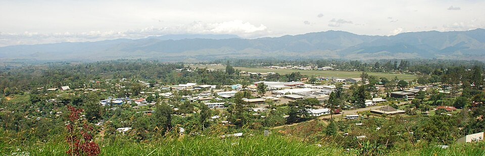
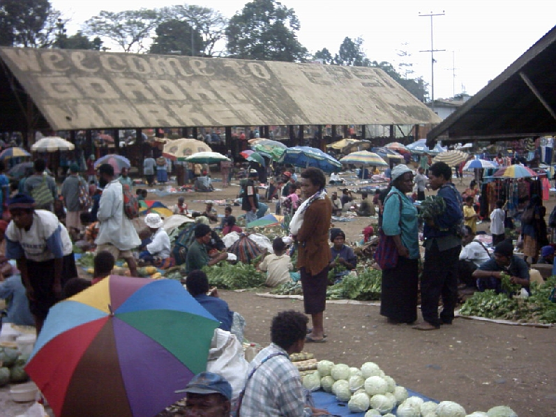

她开始种菇：戈罗卡一户人家的菌草试验田
扎卡阿博里在家试种食用菇，家里多了一种食物，也多了一项收入。


2001年，首个海外菌草示范基地在巴新落地；中国专家组此后在东高地省开展菌草种菇、养畜示范和培训。2020年2月，戈罗卡近郊的家庭主妇扎卡阿博里跟着中国技术专家，开始用菌草培养食用菇。
从示范基地到扎卡阿博里的家，这段经历让南南合作的作用变得具体。基地让她看到怎么种，专家指导帮她在家把第一批菇种起来。此后种多少、怎么经营，由她自己决定。
国家国际发展合作署2022年的报道记载，扎卡阿博里的年养菇收入已达15000基纳。她说，想把种菇当作一生的事业。报道也提到东高地省计划进一步发展菌草产业。
